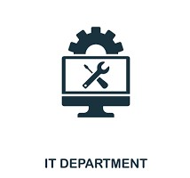
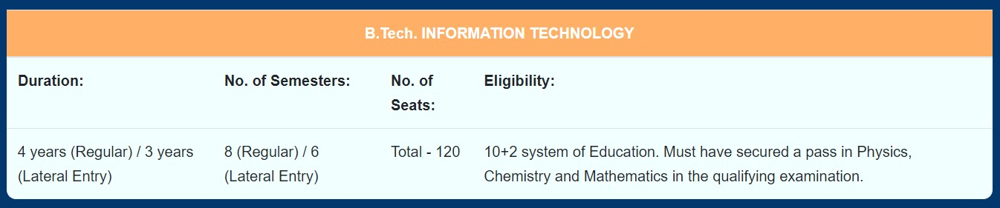

About Department
- Welcome to the IT Department at Kamaraj College of Engineering and Technology Our department is at the forefront of the ever-evolving field of Information Technology, empowering individuals and organizations to thrive in the digital age.
- With a legacy dating back to our establishment in 2001, we have been consistently delivering exceptional education and producing high-calibre technocrats.
Our team consists of twelve vibrant and highly qualified faculty members who possess expertise in various domains of Information Technology.
- Among them, three faculty members have successfully completed their doctoral degrees and four faculty members are actively pursuing their doctorates.
- This ensures that our students receive the most up-to-date and relevant knowledge in the field. At our department, we have a clear objective to equip our students with the skills and knowledge needed to tackle the challenges of the rapidly changing world.
- We pride ourselves on providing comprehensive education that prepares our students to excel in the IT industry.
- With Information Technology being an integral part of almost every profession, we emphasize a multidisciplinary approach that encompasses a wide range of key areas.
- Our curriculum covers Artificial Intelligence, Augmented Reality,Data Analytics, Networking, Data Management, Cyber security, Communications, Web Technology, Software Design, and Systems Management and Administration.
- Information Technology is one of the most dynamic fields in the modern world. Information Technology or “InfoTech” evolved when computing and communicating technologies amalgamated.
- It prepares the students to meet the technical demands of business, government, healthcare, military, education,and other organizations.
- Information Technology is used in almost every sphere of profession, making the process much easier, by developing competant and effective solutions to real life problems.
- IT sector is growing at fast pace and creating ample opportunities in India and abroad for deserving candidates having employable skills.
Vision
- To make the department of Information Technology the unique of its kind in the field of Research and Development activities in this part of world.
Mission
- To impart highly innovative and technical knowledge in the field of Information Technology to the urban and unreachable rural student folks
through Total Quality Education.

STAFF DETAILS
BACK